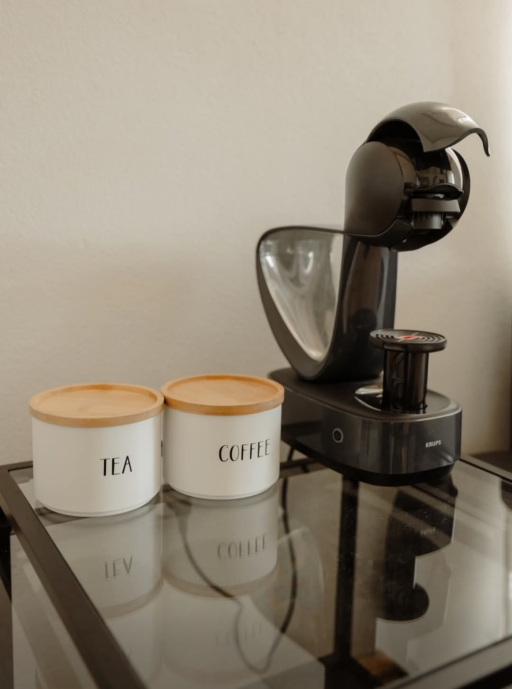

Zori de Zi

PÂINE ÎN OU METANOIA
Aurul dimineților la munte. Pâine caldă, ouă proaspete și tihna unui răsărit fără grabă.

JUMERII PĂDURENILOR
O delicatesă arhaică, crocantă și onestă, servită cu sare grunjoasă și ceapă roșie tăiată pe fund de lemn.

OUĂ DIN OGRADĂ
Esența vieții la țară. Un mic dejun simplu, dar care îți dă forța necesară pentru a cuceri muntele.
Inima Ospățului

MIELUL RÂNDUIT LA CEAUN
Spectacolul focului viu. Carne fragedă care se desface de pe os, infuzată timp de 6 ore cu aroma discretă a fumului de fag.

SARMALELE CASEI
Gătite domol în tihnă, cu mirodenii alese, pentru un gust care îți amintește de duminicile petrecute la bunica.

VÎRȘLI DE HUNEDOARA
Mândria locului. Picanți, suculenți și rumeniți exact cât trebuie pe jarul aprins de afară.

CIORBĂ LA FOC DE LEMNE
O explozie de prospețime și gust afumat, servită aburindă direct din inima ceaunului de fontă.

ARIPIOARE RUMENITE
Miere și cimbru sălbatic de munte, coapte până când pielea devine crocantă și aurie.

CARTOFI ÎN COAJĂ
Cei mai buni prieteni ai jarului. Zdrobiți cu unt de casă și presărați cu verdețuri culese din grădină.

SUPĂ CREMĂ DE SEZON
O mângâiere caldă pentru serile răcoroase, catifelată și plină de aromele pământului pământului.
Tihna de după masă

OREZ CU LAPTE ȘI SCORȚIȘOARĂ
Un desert blând, cu parfum de scorțișoară, care te trimite cu gândul la cele mai frumoase amintiri.

CAFEA LA CUPTOR
Măcinată proaspăt și infuzată la căldura constantă a cuptorului de lut pentru o aromă densă.

INIMA CASEI
Focul sacru al Metanoia. Sursa de viață, căldură și toate bunătățile care ne aduc împreună la masă.